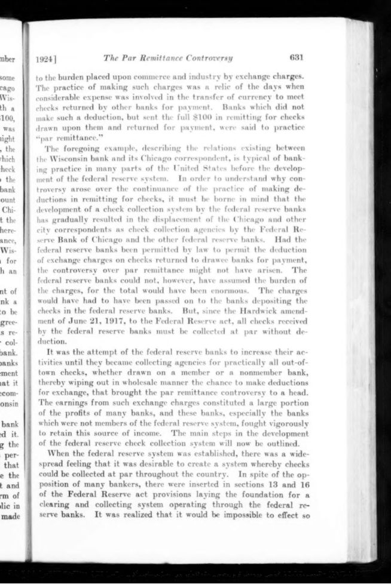

Tippetts e a remessa ao par: a disputa pelos dez centavos de cada cheque
Leitura: 8 min
Charles S. Tippetts reconstitui a campanha dos bancos de reserva pela cobrança de cheques sem desconto, a resistência dos bancos que viviam da taxa de câmbio e as decisões da Suprema Corte que mudaram o rumo.


Antes do Federal Reserve, conta Charles S. Tippetts, da State University of Iowa, um depositante de Wisconsin que pagasse um comerciante de Chicago com um cheque de US$ 100 punha em marcha uma pequena cadeia. O comerciante depositava o cheque num banco de Chicago, que o mandava ao banco de Wisconsin. Este não pagava US$ 100: remetia um saque sobre seu correspondente em Chicago de US$ 99,90. A diferença era a taxa de câmbio. Como o banco de Wisconsin mantinha ali uma conta e o correspondente cobrava ao par os cheques dele sobre outros bancos, o correspondente engolia o desconto, ou o repassava ao comerciante, que o embutia nos preços. É esse o peso sobre o comércio a que se refere quem fala em taxas de câmbio.
O que é remessa ao par?
Tippetts prefere “remessa ao par” a “compensação ao par”, porque os bancos de reserva não compensam cheques; a disputa é sobre a forma de remeter. A taxa era resquício do tempo em que mandar dinheiro em espécie custava caro. Quando os bancos de reserva tomaram dos correspondentes urbanos o papel de cobradores de cheques, a questão mudou de escala: se pudessem aceitar o desconto, teriam de repassá-lo aos depositantes; mas a emenda Hardwick, de 21 de junho de 1917, determinou que nenhuma taxa fosse cobrada contra eles. A tentativa de tornar os bancos de reserva cobradores de praticamente todos os cheques de fora da praça eliminava, em bloco, uma fonte de lucro de muitos bancos, sobretudo dos não membros.
Como o sistema foi construído?
A lei do Federal Reserve lançou as bases nas seções 13 e 16. O primeiro passo veio dos bancos de reserva de Kansas City e St. Louis, que pediram ao Board permissão para exigir dos bancos de seus distritos a remessa ao par. Um sistema voluntário para todos os membros, de junho de 1915, teve adesão de cerca de um quarto deles. Em julho de 1916, a remessa ao par tornou-se obrigatória para os membros, apesar da ameaça de muitos bancos nacionais do interior de trocar de licença, que não se cumpriu. Uma tarifa por item, cobrada no início pela cobrança, foi abolida em 15 de julho de 1918. A emenda de 7 de setembro de 1916 permitiu receber cheques sobre não membros, desde que pagáveis à apresentação; no fim daquele ano, cerca de 8 mil não membros remetiam ao par, e o total chegava a uns 15 mil bancos.
Como os bancos de reserva pressionaram?
No fim de 1917, cerca de 17 mil bancos remetiam ao par; em 1918 vieram mais dois mil. Uma conferência de agentes do Federal Reserve, em dezembro de 1918, decidiu ampliar a lista, na convicção de que, enquanto cerca de 10 mil bancos recusassem a remessa ao par, o país não teria um sistema universal. Os bancos que cobravam a taxa também se beneficiavam, por meio dos correspondentes, da cobrança ao par dos cheques sobre os outros. O método foi persuadir os bancos estado por estado e, quando restavam poucos, anunciar a data em que todos entrariam na lista. Os cheques sobre os recalcitrantes passavam a ser apresentados no balcão, exigindo-se dinheiro, por empresas de transporte, temporariamente até pelo correio, por bancos membros da cidade ou por funcionários dos próprios bancos de reserva, em viagens longas e caras.
Como o Sul reagiu?
Quando a pressão chegou aos bancos do Sul, formou-se em Atlanta uma associação de bancos nacionais e estaduais para defender a taxa. A partir do Mississippi, legislaturas como as da Louisiana, Dakota do Sul, Geórgia, Carolina do Norte, Tennessee e Flórida autorizaram os bancos a descontar a taxa dos cheques apresentados por agentes dos bancos de reserva, e a maioria proibiu protestar cheques por recusa de pagamento integral.
No caso de Atlanta, bancos da Geórgia acusaram o banco de reserva de acumular cheques para apresentá-los de uma vez no balcão. Em 16 de maio de 1921, a Suprema Corte, pelo juiz Brandeis, afirmou que nenhum direito é absoluto e mandou julgar os fatos. No julgamento, o banco de reserva aceitou receber saques sobre correspondentes em vez de dinheiro, e não se provou intenção de oprimir. A decisão foi confirmada em 2 de novembro de 1922 e pela Suprema Corte em 11 de junho de 1923: o banco de reserva pode apresentar o cheque no balcão como qualquer banco, e o prejuízo dos bancos é o da concorrência legítima.
O caso da Carolina do Norte tratava de outra questão. Uma lei estadual de 5 de fevereiro de 1921 permitia aos bancos pagar com saques os cheques apresentados por agentes do banco de reserva de Richmond, que os devolvia como não pagos. Cerca de 270 bancos aderiram à ação; a Suprema Corte estadual, em maio de 1922, derrubou a lei por unanimidade. A Suprema Corte federal, em 11 de junho de 1923, reformou a decisão e manteve a lei: o pagamento com saque presume o consentimento do portador; a regra é exercício do poder de polícia; e a lei do Federal Reserve não obriga os bancos de reserva a cobrar cheques de quem recusa a remessa ao par, nem a constituir um sistema universal.
O que mudou depois de 1923?
O Federal Reserve Board revisou suas regras. Os bancos de reserva deixariam de receber cheques sobre não membros que recusassem a remessa ao par, e cobrariam 0,1%, com mínimo de 10 centavos por item, pelos cheques emitidos ou endossados por esses bancos. A segunda medida foi adiada após protestos. Em 1º de agosto de 1923, Charles DeB. Claiborne, de New Orleans, e L. R. Adams, de Atlanta, propuseram que os bancos de reserva recebessem esses cheques como meros agentes, permitindo ao sacado descontar até 10 centavos por US$ 100. Um comitê de governadores rejeitou o plano por unanimidade: ele inflaria o dinheiro em trânsito em cerca de US$ 300 milhões e reimporia mais de US$ 100 milhões anuais em taxas. O Board também mandou suspender o uso de agentes que não fossem bancos.
“Não têm direito de partilhar das vantagens do sistema de cobrança ao par.” (“have no right to share in the advantages of the par collection system”)
A versão final, a Regulation J de 1924, apenas proíbe receber cheques que não possam ser cobrados ao par. Os opositores, animados, preparam nova ação: um banco nacional de Pascagoula, no Mississippi, processou o banco de reserva de Atlanta para recuperar o direito de descontar a taxa, sustentando que nada na lei obriga sequer os membros a remeter ao par.
Quem deve pagar o custo do cheque?
“Poucos economistas hoje acreditam que haja qualquer justificativa para a dedução de câmbio.” (“Few economists today believe that there is any justification for the deduction of exchange”)
Para Tippetts, se a remessa envolve despesa, ela cabe a quem emite o cheque, não a quem o recebe. Os bancos que cobram a taxa respondem que a concorrência impede cobrar do próprio cliente; o autor replica que isso não justifica cobrar de outro, e que a perda deve ser tratada como custo que a concorrência impõe. O sistema de cobrança do Federal Reserve, acrescenta, reduziu muito a despesa de transferir fundos. Com 90% dos bancos ainda na lista ao par, o incômodo é manter dois sistemas de cobrança, um dentro e outro fora do Federal Reserve. Na conclusão, o autor atribui papel decisivo às empresas, que cada vez mais exigem pagamento em cheques pagáveis ao par: sem o empenho dos interesses comerciais em abolir a taxa, o sistema universal de remessa ao par fica para um futuro distante.
Na minha leitura
Na minha leitura, o artigo mostra como um custo pequeno por unidade se torna questão de desenho institucional. Dez centavos em cem dólares parecem irrelevantes, mas somados davam lucro a milhares de bancos, e a disputa era sobre a quem cabia esse custo e quem podia impor a regra.
O ponto de método é a separação entre o que a tecnologia de cobrança permitia e o que a lei autorizava. A Suprema Corte disse que o Federal Reserve podia cobrar cheques no balcão, mas não era obrigado a construir um sistema universal; a rede de pagamentos ao par dependia, assim, de adesão e de incentivos, e não só da eficiência técnica do sistema central.
Glossário
- Remessa ao par
- pagamento de cheque pelo banco sacado pelo valor de face, sem desconto.
- Taxa de câmbio (exchange charge)
- desconto cobrado pelo banco sacado ao remeter o valor de um cheque a outra praça.
- Banco correspondente
- banco de grande cidade que mantém contas de bancos do interior e cobra cheques para eles.
- Emenda Hardwick
- emenda de 1917 à lei do Federal Reserve que proibiu cobrar taxa de câmbio contra os bancos de reserva.
- Float
- dinheiro em trânsito, contado como reserva por mais de um banco enquanto o cheque não é pago.
Fontes
- The Par Remittance Controversy — Charles S. Tippetts (State University of Iowa) (pp. 629–648). Internet Archive (número completo, PDF)
- Edição completa, com os demais artigos: Nº 188 do Arquivo.
Documento em domínio público (EUA, publicado antes de 1931), via JSTOR Early Journal Content e Internet Archive. Resumo e comentário do autor deste site, sem afiliação com a American Economic Association. Encontrou um erro? Escreva: a correção é publicada no próprio texto, com data.
↑ Nº 188 · A remessa ao par, o preço do cimento e a equação de trocas medida Snyder e a equação de trocas: quando a velocidade da moeda para de variar →